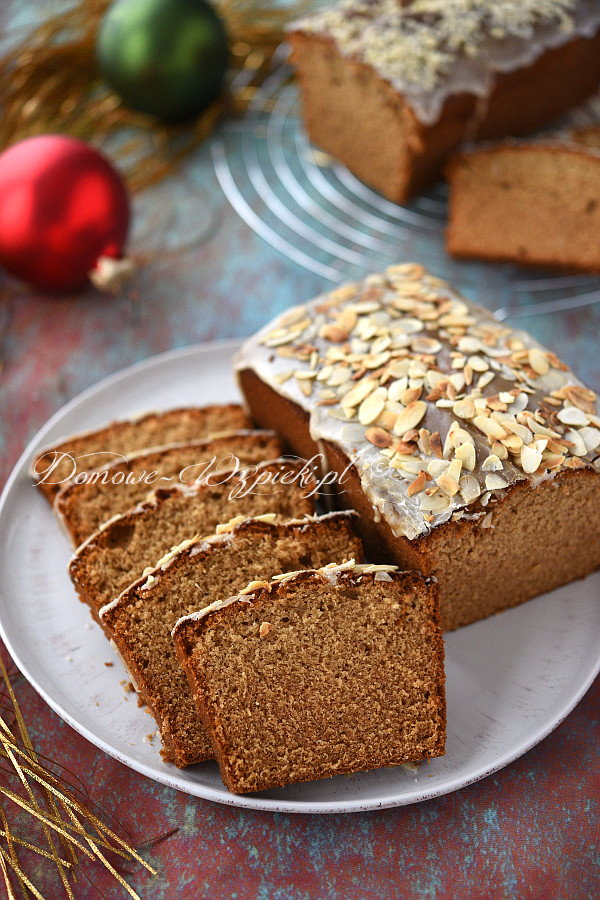

Piernik domowy

Opis
Jest to zwyczajny, szybki piernik. Mięciutki, puszysty, aromatyczny, ale nie wilgotny i nie zbity. Ciasto jest bardzo szybkie do przygotowania. Jest gotowe do spożycia od razu po upieczeniu. To przypis dla tych, którzy szukają zwykłego, szybkiego i niewydziwianego piernika. Idealny wypiek na święta Bożego Narodzenia.
Składniki
- 3 szklanki mąki pszennej (u mnie: 450g)
- 3 jajka
- 1 szklanka cukru (200g)
- 1 szklanka kawy (z ekspresu, rozpuszczalna lub parzona bez fusów)
- 1 szklanka miodu płynnego, sztucznego lub prawdziwego (u mnie: 330g)
- ¾ szklanki oleju (150g)
- 1 opakowanie przyprawy korzennej do piernika (= 3,5 – 4 łyżeczki)
- 1 łyżeczka sody oczyszczonej
- ½ szklanki cukru pudru
- 2 łyżki gorącej wody
- migdały w płatkach lub posiekane (opcjonalnie)
Sposób przygotowania
-
Mąkę wymieszać z sodą i przyprawą do piernika. Odstawić na bok.
-
Oddzielić żółtka od białek.
-
Żółtka utrzeć z cukrem i miodem na puszystą masę. Zmniejszyć obroty miksera na niskie i miksując krótko, tylko do połączenia się składników, dodać stopniowo kawę, wymieszaną mąkę i olej.
-
Osobno ubić białka na sztywno. Pianę z białek wmieszać delikatnie szpatułką do ciasta.
-
Ciasto wyłożyć do dwóch keksówek (o długości 25cm) wysmarowanych masłem i posypanych bułką tartą.
-
Piec w nagrzanym piekarniku ok. 50- 60 minut, do suchego patyczka, w temperaturze 180°C (grzałka góra- dół). Studzić przy lekko uchylonych drzwiczkach piekarnika.
-
Ciasto można polać lukrem. (Cukier puder rozetrzeć razem z gorącą wodą na gładką masę). Lukier można posypać podprażonymi na sychej patelni migdałami w płatkach lub siekanymi.